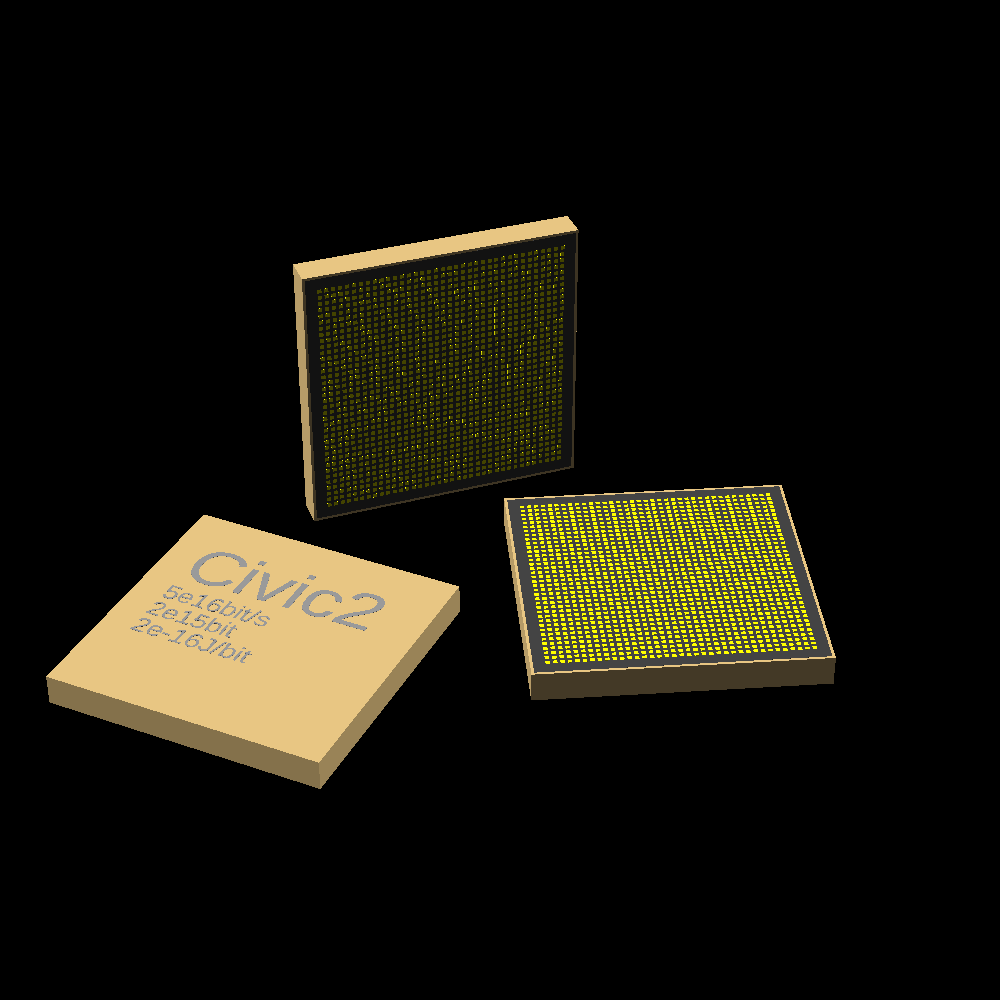
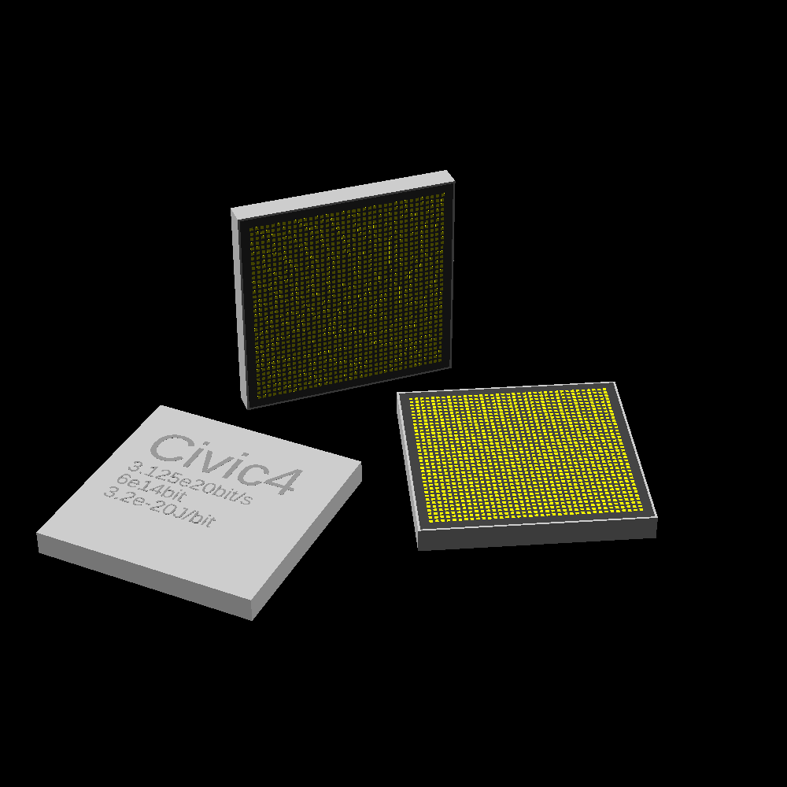
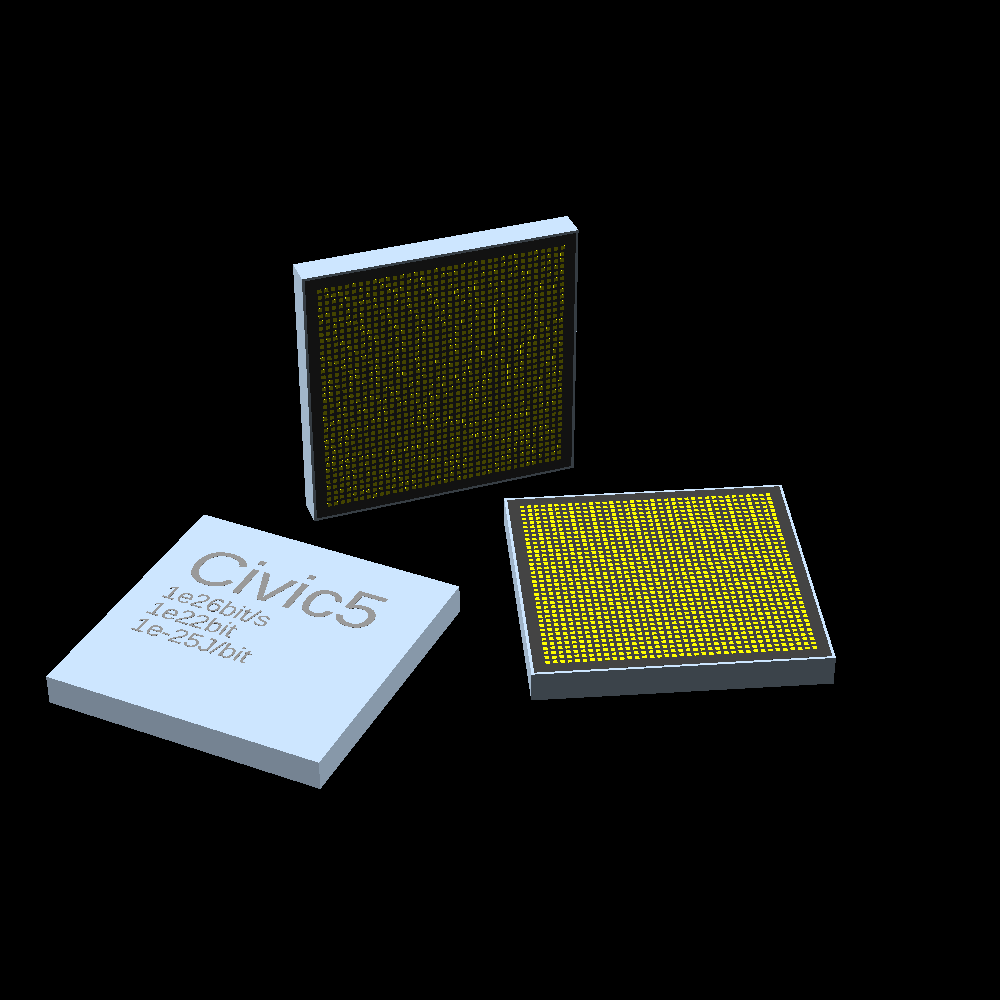

link to this page
Civic chips
 Civic chips are one of the more widespread forms of computronium and one of the easiest ways to produce additional computing power. The original civic chip was a community-driven open project, made by collaboration of independent settlers, asteroid miners, and numerous other people whose lives place them far away from the centralized manufacturing centers of society, which at the time the project started were a necessity for producing usable computer hardware. Over time the project expanded, resulting in a series of chips all optimized for different methods and scales of manufacturing.
Civic chips are one of the more widespread forms of computronium and one of the easiest ways to produce additional computing power. The original civic chip was a community-driven open project, made by collaboration of independent settlers, asteroid miners, and numerous other people whose lives place them far away from the centralized manufacturing centers of society, which at the time the project started were a necessity for producing usable computer hardware. Over time the project expanded, resulting in a series of chips all optimized for different methods and scales of manufacturing.
The chips all have dimensions of 10mm by 10mm by 1mm and use the same interface, making them largely interchangeable with each other.
(A bit of meta info here is, civic 2, 3 and 4 were written based on the Beyond Cmos paper.)
Civic 1 work in progress
Civic 1 is to be written based on present modern electronics. The design might be so coarse that even masses of modern micrites could emulate it when arranged into the right structure.
computation rate: X
memory: X
efficiency: X
max. power consumption: 10W
Civic 2

Civic 2 relies on indium arsenide tunneling field effect transistors, and can be easily produced through ion beam printing, requiring only materials that are easily extracted through low temperature electrolysis.
computation rate: 5e16bit/s
memory: 2e15bit
efficiency: 2e-16J/bit
max. power consumption: 10W
Civic 3
Civic 3 relies on graphene nanoribbon tunneling field effect transistors, exploiting graphene's ability to act as a p-type or n-type semiconductor depending on the presence of electrostatic charge. It requires equipment capable of forming graphene for that purpose. In terms of material, the chip is made almost entirely from carbon, making it very cheap to manufacture if the equipment to do so is available.
computation rate: 8e18bit/s
memory: 2e15bit
efficiency: 1.25e-18J/bit
max. power consumption: 10W
Civic 4

Civic 4 relies on bilayer pseudospin field effect transistors, exploiting quantum effects occurring between closely placed sheets of graphene and leaving the realm of moving charges to flip bits to instead manipulate the spin of electrically neutral quasiparticles called excitons, formed by electrons and electron holes in the graphene nanoribbons. It requires equipment capable of forming graphene for that purpose, as well as very precise nanoscale assembly equipment to ensure exact spacing of the graphene nanoribbons, and the extra space needed also halves the number of transistors that could be packed into the chip. The chip operates remarkably close to the hard limit imposed by the landauer principle, consuming only about 10 times more energy per bit flip than the minimum for room temperature.
computation rate: 3.125e20bit/s
memory: 1e15bit
efficiency: 3.2e-20J/bit
max. power consumption: 10W
Civic 5 work in progress

(Civic 5 is to be written based on theoretical technologies pushed to their limits.)
Civic 5 appeared as the newest addition to the civic chip family after the project had already been dormant for a couple centuries, with the chips 1 through 4 largely thought of as optimal designs. It is an especially odd addition as it appears to have been a completely different project that was pulled in and adapted for compatibility with the previous chips. The internals of the Civic-5 require assembly with nearly perfect precision placement of single atoms, particularly due to the extensive use of precisely tuned quantum dots, mostly ruling out any known methods to mass-produce the chip, which makes it one of the few goods worth trading across interstellar distances.
computation rate: 1e26 bit/s
memory: 1e22 bit
efficiency: 1e-25 J/bit
max. power consumption: 10W
relevant pages
 computation
computation